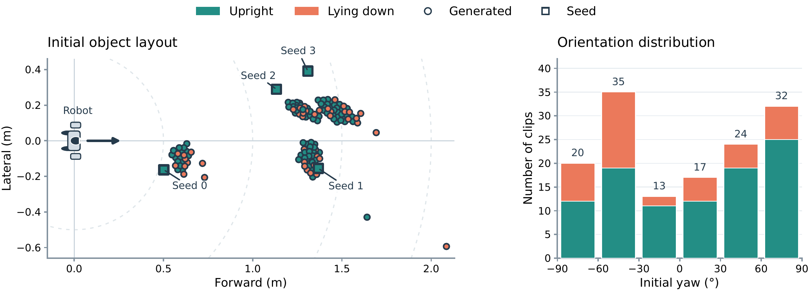
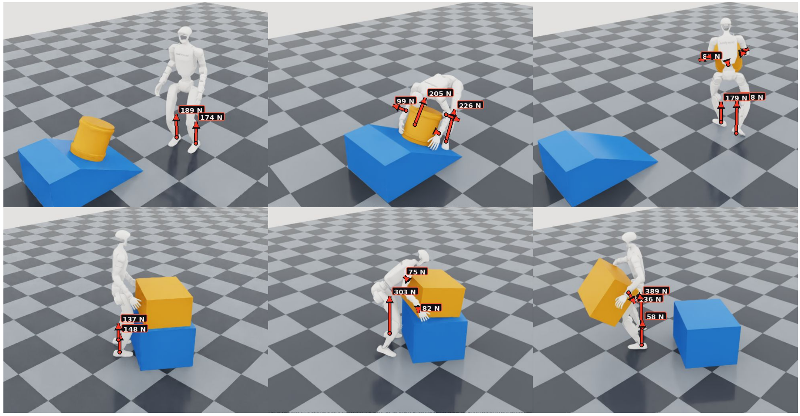

Counterfactual Video Generation Enables
Scalable Humanoid Loco-Manipulation
1 Amazon FAR2 UC Berkeley3 Stanford University4 Carnegie Mellon University† Amazon FAR team co-leads.
tl;dr: We expand 4 real video demonstrations into diverse training data for humanoid loco-manipulation.
We train only on videos of boxes and generated videos of bins, barrels, and balls.
Real-world results
Our policy handles these real objects without real-world fine-tuning.
- Onboard depth onlyNo MOCAP or reference motion
- A single autonomous policyWith joystick steering.
- Trained from video aloneZero-shot Sim2Real
Explore objects, scale, strategy, pose, and robustness.
Teaching humanoids to pick up diverse everyday objects
Humans generalize from rich interactions. How can robots gain this experience?
Visual imitation gives robots a starting point: VideoMimic learns climbing and sitting from human video.
Scaling this approach means collecting more demonstrations. Common solutions are:
(1) Collect your own data: motion capture and recording are costly and do not scale.
(2) Internet video: abundant, but reconstruction-friendly demonstrations are hard to find.
Our solution: Expand a few recordings into new interactions with a video model.
See different applications
Human-scene interaction
Vary the stairs
Human-object interaction
Vary the object
Counterfactual video generation
The video model
Video-to-video generation.
What PRISM does
We sample interactions, then run real-to-sim.
Counterfactual videos
These videos show interactions that did not happen in the source recording, but could have happened with a different object.
Prompt template
<VIDEO>
In a real-world continuous footage. Preserve the reference video's original background, lighting and camera viewpoint.
replace the box with <CLS>, pick it up and carry with two hands.
<VIDEO> = source recording · <CLS> = box, bin, barrel, or ball
Why video-to-video
A source video supplies the person, scene, and action. Text-to-video must create all three.
Method
We reconstruct these interactions in 3D, retarget them to the robot, and train in simulation.
We correct generation and reconstruction errors for physically feasible motion and hand–object contact.
Generated CF video
3D reconstruction
Retargeted motion
Learn in simulation
Transfer to the real world

See our paper for more details.
Robustness and Generalization
Initial object-pose coverage
We compare object poses in 137 generated clips and 4 upright seed videos. The plots show positions relative to G1 and yaw counts in six 30° bins modulo 180°.

Zero-shot elevated pick-up
We train only on flat terrain. In simulation, the policy succeeds zero-shot on a 35° ramp (top) and a 0.43 m support (bottom), but fails at 45° and 0.45 m.
Tall training objects may explain this transfer by exposing the policy to similar grasp heights. We can generate elevated pick-up demonstrations with simple V2V prompts; training on them may extend this range.

Why video in the agentic era?
GPT-6 Astra (Extra High) for the same motion: a person picks up a bin, carries it, and sets it down.
Text (without video). We caption the generated video, then give Astra only that text to script the SMPL motion.
Video. A video model turns a real box-carrying demonstration into a bin-carrying video. Astra calls a Real2Sim module, then refines the reconstruction.
The simplest way is still to show a demonstration. Video still helps—and it should! The agentic pipeline only helps scale Real2Sim.
BibTeX
If you find our work helpful, please cite:
@article{wang2026counterfactual,
title={Counterfactual Video Generation Enables Scalable Humanoid Loco-Manipulation},
author={Wang, Zihan and Wu, Zhen and Abbeel, Pieter and Duan, Rocky and Malik, Jitendra and Sferrazza, Carmelo and Liu, C. Karen and Shi, Guanya and Kanazawa, Angjoo},
journal={arXiv preprint arXiv:2609.38172},
year={2026}
}
Acknowledgements
We thank Chung Min Kim, Arthur Allshire, Hongsuk Choi, Isabella Yu, Junyi Zhang, Jacob Berg, Yen-Jen Wang, Sirui Chen, Charlie Cheng, Jiashun Wang, Siheng Zhao, Youjian Huang, JC Hu, Haochen Wang, Haozhi Qi and Qitao Zhao for their support and valuable feedback.